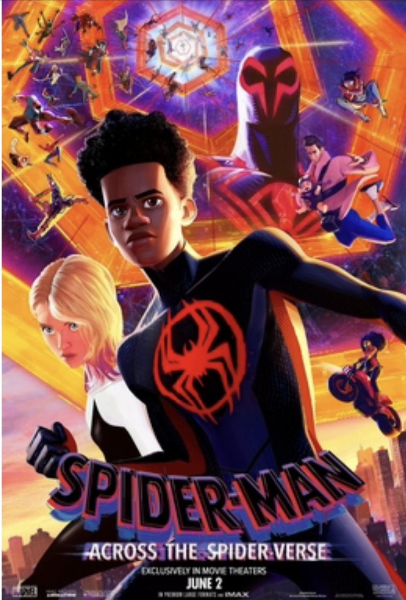
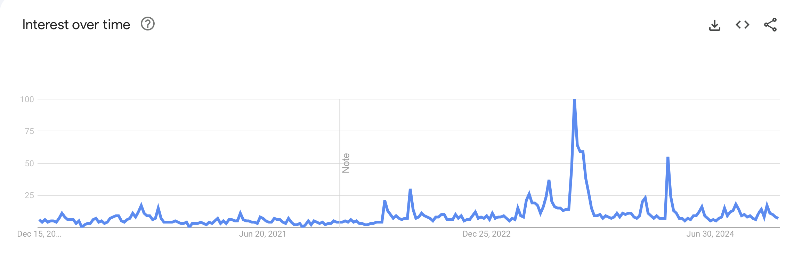
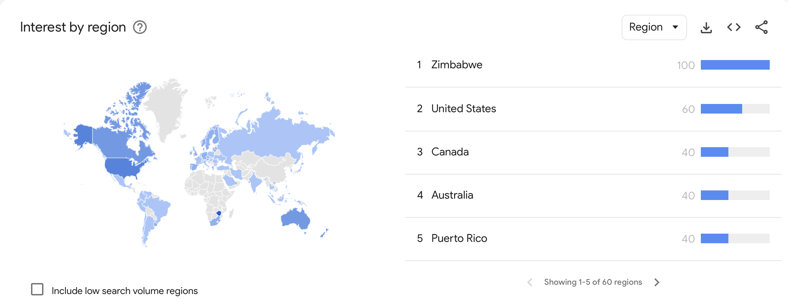

1. Go Woke, Go Broke... Really?
2. Go Woke, Really? What the Data Say...
3. Go Woke, Really? What the Data Say...
4. Conclusion
Go Woke, Go Broke?
... Really?
The Urge of Representation
In recent years, the call for diversity representation has grown stronger in media. Indeed, on the one hand, for marginalized groups, positive media representation can be meaningful as it helps them find role models with which they can identify as well as increase their self-esteem.
On the other hand, good diversity exposition through media can assist in reducing stereotypes of underrepresented groups, as well as increasing the empathy of tolerance for the people who are not concerned.
Related Articles:
The Origin Story behind ‘Go Woke, Go Broke’
By reactance to the increase in representation, the say ‘Get Woke, Go Broke’ is born. This sentence finds its origin in the internet and is often used by right-wing groups to boycott media featuring progressive values – such as women’s empowerment, LGBTQIA+ representation, or Critical Race Theory – thus reducing the income of the targeted media.
Related Articles:
Example of movies targeted by ‘Go Woke, go Broke’
The Little Mermaid – Rob Marshal (2023)

Critics: Halle Bailey, the actress who interprets Ariel – the little mermaid, is black instead of being white like in the 1989 animated version.
Queen Cleopatra – Jada Pinkett Smith (2023)
Critics:Adele James, the actress who interprets Cleopatra is black, which is not historically accurate. The movie is also accused of cultural appropriation of Egyptian History.
Snow White – Marc Webb (2025 – Not out yet)
Critics: Rachel Zegler, the actress who interprets Snow white is Hispanic instead of being white like in the 1937 animated version. Moreover, the prince is no longer present in the story. Finally, the 7 dwarfs have been replaced by 7 magical creatures: for which one of the actors is with dwarfism and 6 non-dwarf actors of varying ethnicities.
Counter Example of ‘Go Woke, Go Broke’
Barbie – Greta Gerwig (2023)
Plot: Film that follows the journey of Barbie, the iconic doll, as she embarks on a journey of self-discovery. Living in the utopian world of Barbieland, a matriarchal society, Barbie starts questioning her purpose and identity. Her existential crisis leads her to venture into the real world, where she faces challenges, learns about gender dynamics, and discovers the complexities of human emotions. The film blends humor, fantasy, and social commentary while exploring themes of identity, feminism, and self-empowerment.
Budget: 128–145 million $
Box Office Revenue: 1.446 billion $
Spider-Man: Across the Spider-Verse – Joakim Dos Santos, Kemp Power & Justin K. Thomson (2023)
Plot: Animated superhero film that follows Miles Morales, the young Spider-Man, as he journeys through multiple dimensions. Miles meets various versions of Spider-Man from alternate universes, including Spider-Woman and Spider-Man 2099. Together, they face a new threat that could endanger the multiverse. The film explores themes of identity, responsibility, and the power of teamwork, all while delivering stunning animation and an emotionally charged storyline.
Budget: 100–150 million $
Box Office Revenue: 690.8 million $
Bohemian Rhapsody – Bryan Singer (2018)
Plot: Biographical musical drama about the iconic British rock band Queen and its legendary lead singer, Freddie Mercury. The film chronicles Freddie's rise to fame, his complex personal life, and the band's journey to creating some of the most unforgettable music in rock history. It focuses on Freddie's struggles with his identity, relationships, and the challenges of being in the spotlight, culminating in Queen's historic performance at Live Aid in 1985. The film celebrates the band's music and Freddie Mercury's lasting impact on the world.
Budget: 50–55 million $
Box Office Revenue: 910.8 million $
Google Trends
Google trends associated with 'woke'
Google trends associated with 'go woke go broke'


We took a quick look at google trends for the terms ‘’woke’’ and ‘’go woke, go broke’. We see that these terms mostly come from the USA, and that’s where interest for these terms is highest, followed closely by Anglo countries such as Australia, Canada, New Zealand and the UK. However, the concept is not entirely confined to the Anglosphere, as some non English-Speaking countries such as Russia or France still have a fifth of the US’s rate of research. The peak of the searches for ‘woke’ peaked in August 2024 but it has been in search bars since at least 2020. ‘go woke go broke’ hit its peak in August 2023. It is therefore a contemporary question that is of interest worldwide.
'Go Woke, Go Broke' a fact or a fiction?
What's your opinion?
Go Woke, Really? Click Here To Know